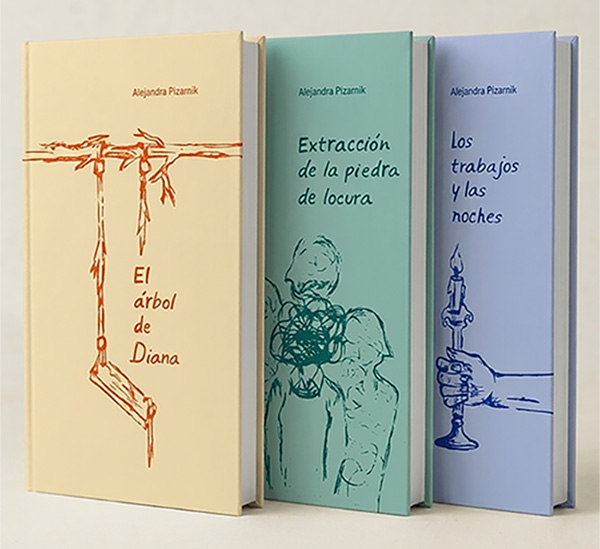
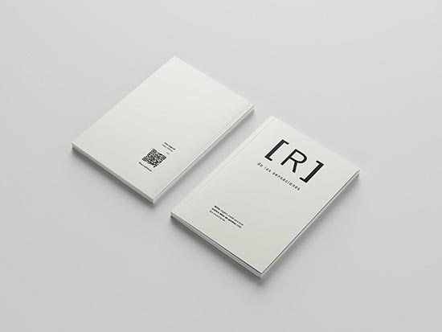

Pasacalles LEO
Maquetación y preparación de archivos vectoriales para cartelería y pasacalles a gran escala. Creación, digitalización y optimización de piezas gráficas vectoriales utilizando CorelDRAW y Adobe Illustrator
Tengo 26 años, soy estudiante de los últimos años de Diseño con interés en Diseño Editorial
y UX/UI.
Busco una oportunidad laboral que me permita volcar mis conocimientos, sumar
experiencia
en proyectos integrales
Conoce un poco más de mi...

Maquetación y preparación de archivos vectoriales para cartelería y pasacalles a gran escala. Creación, digitalización y optimización de piezas gráficas vectoriales utilizando CorelDRAW y Adobe Illustrator
Gestión integral y desarrollo de proyectos visuales de manera autónoma
Me desempeñe en la creacion de pasacalles en Uruguay, se utilizo los programas corel draw e illustrator

O escanea aca

Proyecto de reinterpretation de la pieza editorial, concebido como una obra en sí misma. Este libro recopila una serie de producciones propias articuladas a través de un diseño gráfico inédito y una búsqueda material específica. El formato, la estructura y las decisiones tipográficas están pensados para tensionar el vínculo tradicional con el lector y proponer un recorrido no lineal por el contenido.
+ Leer más
Desarrollar la identidad visual y el maquetado de una colección de tres títulos. El trabajo comprende la pieza gráfica completa: diseño exterior (tapa, contratapa, lomo y solapas si aplica)y la grilla tipográfica del interior, garantizando coherencia formal y conceptual en toda la serie.
+ Leer más


Este proyecto aborda el libro de artista como un territorio de exploración totalmente libre. El objetivo principal fue reinterpretar el vínculo con el lector y poner a prueba los límites del objeto libro, usando el soporte físico como un recurso narrativo que potencia el significado de la obra. Al tratarse de un desarrollo de carácter experimental, no existieron restricciones de formato, estructura ni materiales. A través de un lenguaje gráfico y tipográfico propio, combiné distintos recursos táctiles y compositivos para transformar la lectura tradicional en una experiencia abierta.
+ Leer más